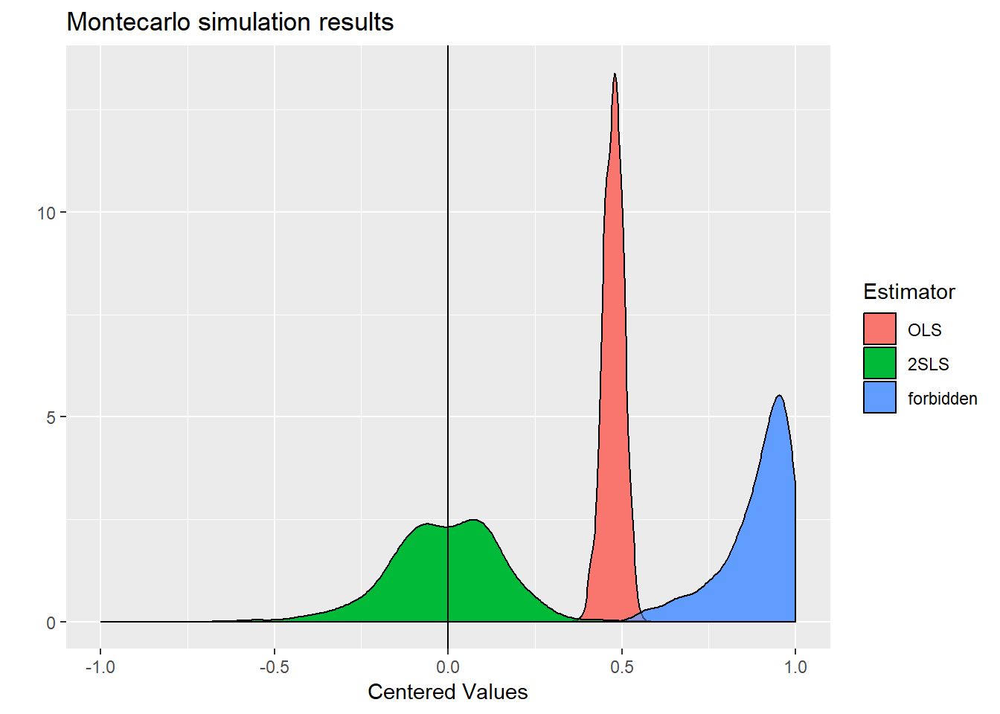
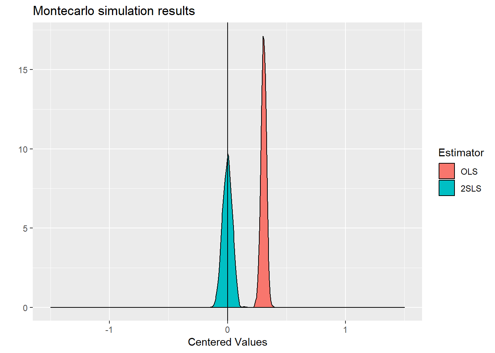
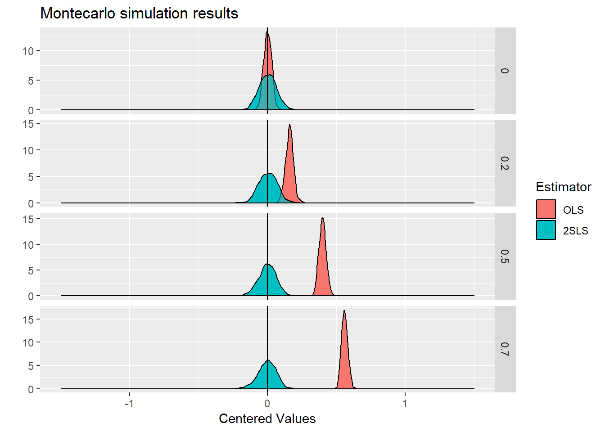
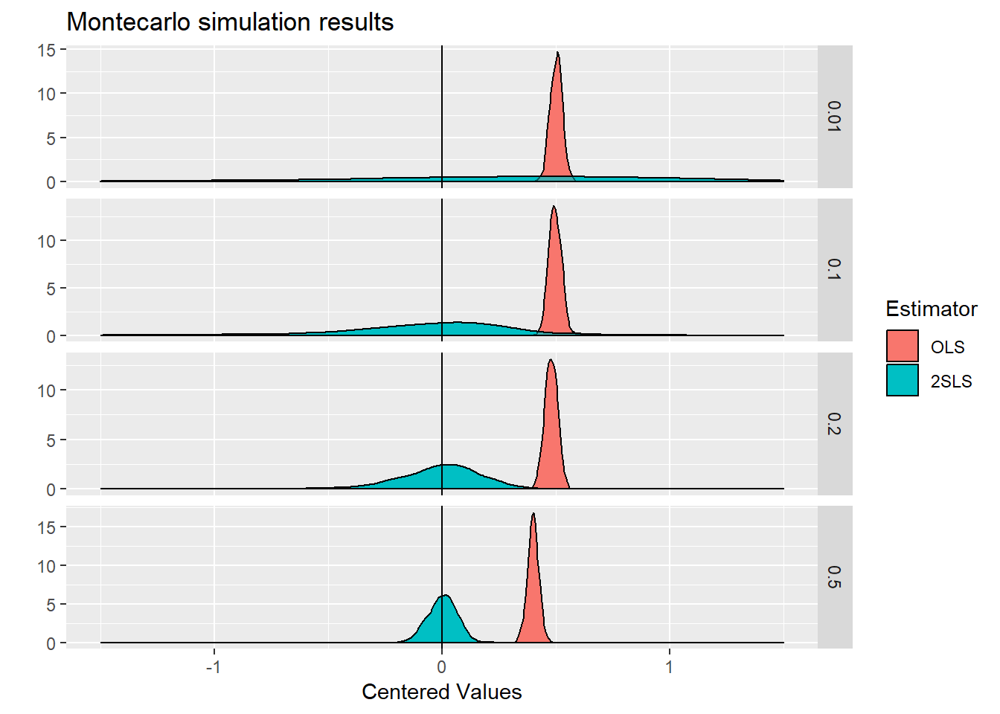
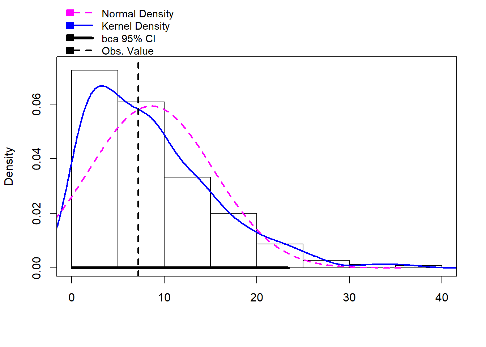
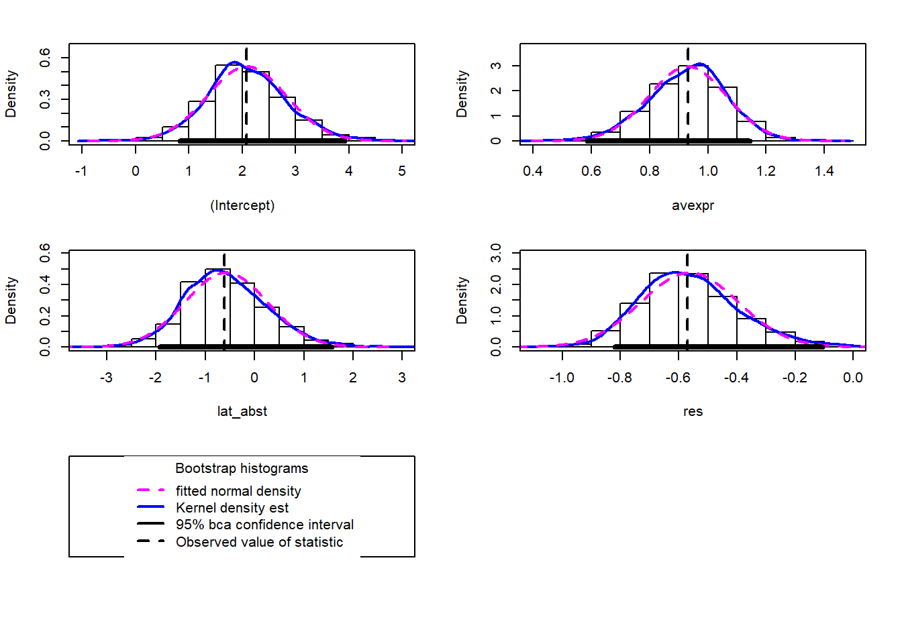
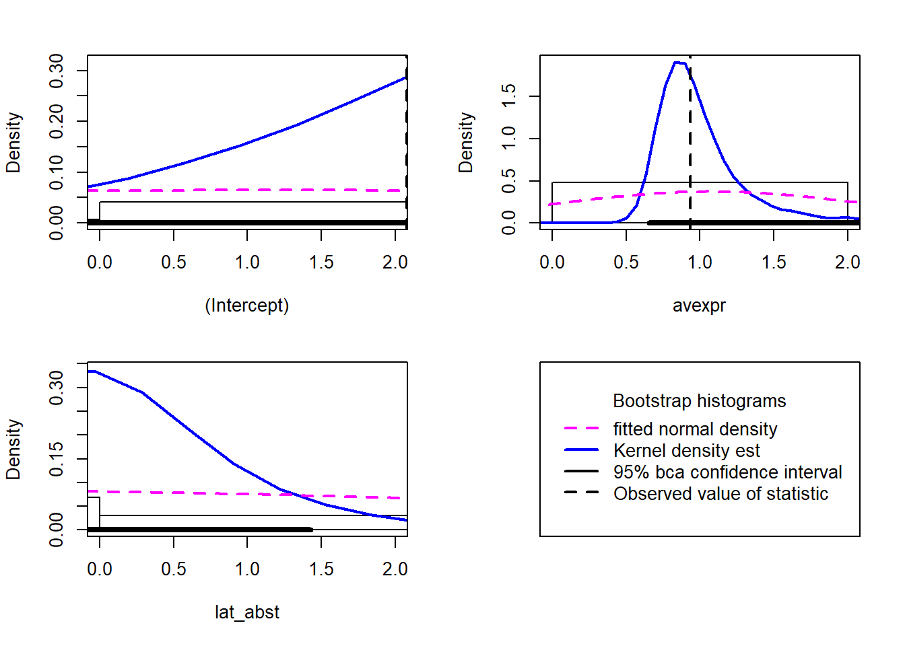
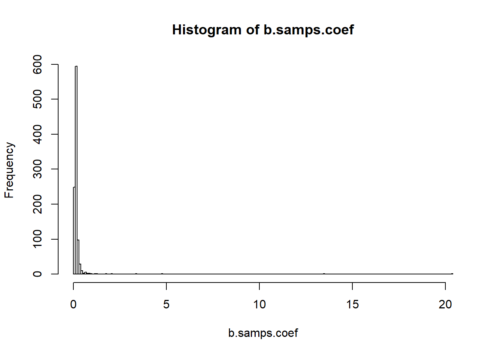
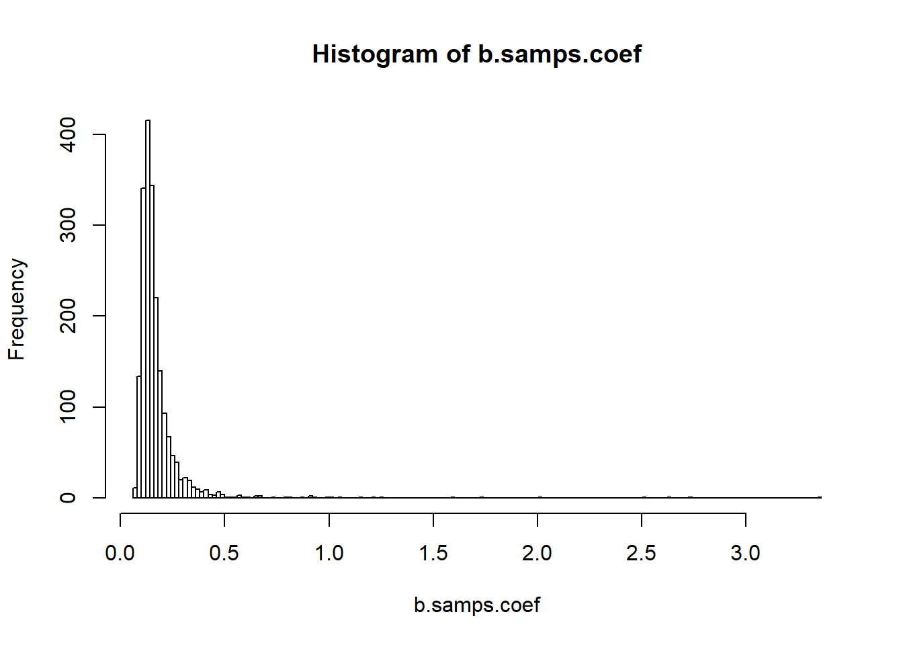

Chapter 4 IV and RDD
4.1 The basics of IV
Hausman (1983)
Lecture notes on IV bias
4.1.1 The forbidden regression
A common mistake in running IV regressions, especially when done in a two-step procedure, is what has memorably been termed by Jerry Hausman “the forbidden regression.”
Lecture notes on the forbidden regression
library(mvtnorm)
library(AER)
MC.endogeneity <- function(N=1000,covuud=0.5,covxz=0.5,alfa=1.0,pi=1.0, gamma=0.5, phi=0.0){
## Parameters
beta <- 1.0
sigma <- matrix(c( 1,covuud, 0, 0,
covuud, 1, 0, 0,
0, 0, 1,covxz,
0, 0,covxz, 1),ncol=4)
## generate residuals/variables
m <- rmvnorm(N,mean=c(0,0,0,0),sigma=sigma)
Z <- matrix(m[,3],N,1)
X <- matrix(m[,4],N,1)
## Generate DGP:
D <- gamma*Z + pi*X + m[,2]
Y <- beta*D + alfa*X + phi*Z + m[,1]
## Compute both estimators
ols <- summary(lm(Y ~ -1 + D + X))$coefficients[1,1]
tsls <- summary(ivreg(Y ~ -1 + D + X | X + Z))$coefficients[1,1]
R <- summary(lm(D ~ -1 + Z))$residual
forbidden <- summary(lm(Y ~ -1 + D + X + R))$coefficients[1,1]
## Collect and return results
res <- c(ols, tsls, forbidden, N, covuud, gamma, phi)
names(res) <- c("OLS", "2SLS", "forbidden", "N", "covuud", "gamma", "phi")
return(res)
}
## Try function once
MC.endogeneity()## OLS 2SLS forbidden N covuud
## 1.4148898 0.9657436 1.2154456 1000.0000000 0.5000000
## gamma phi
## 0.5000000 0.0000000## Run the DGP/estim 1000 times, with fixed parameters:
system.time(MC1 <- replicate(500, MC.endogeneity(N=1000,covuud=0.5,
covxz=-0.9,alfa=1.0,pi=1.0,
gamma=0.5, phi=0.00)))## user system elapsed
## 6.29 0.08 6.78## Reshape data to have convenient form for graphs/tables:
library(reshape2)
MC1_long <- melt(as.data.frame(t(MC1)), measure.vars=c("OLS", "2SLS", "forbidden"),
variable.name="Estimator")
## Visualise the data
library(ggplot2)
# Plot with fixed parameters
qplot(x=value-1, data=MC1_long, geom="density",fill=Estimator)+
geom_density( alpha=0.5)+
xlim(c(-1.0,1.0))+
geom_vline(xintercept=0)+
ggtitle("Montecarlo simulation results")+
xlab("Centered Values")
library(plyr)
MC_tab <- ddply(MC1_long, .(Estimator, N, covuud, gamma, phi), summarise,
means=mean(value, na.rm=TRUE),
bias=means -1,
var=var(value, na.rm=TRUE),
mse=var+bias^2
)
MC_tab## Estimator N covuud gamma phi means bias var
## 1 OLS 1000 0.5 0.5 0 1.4753419 0.475341914 0.000811993
## 2 2SLS 1000 0.5 0.5 0 0.9920654 -0.007934576 0.023083793
## 3 forbidden 1000 0.5 0.5 0 2.1353757 1.135375708 0.031921811
## mse
## 1 0.22676193
## 2 0.02314675
## 3 1.320999814.1.2 Weak instruments
library(mvtnorm)
MC.endogeneity <- function(N=100,cov=0.5, gamma=0.5, phi=0.0){
## Parameters
beta <- 1.0
sigma <- matrix(c(1,cov,0,
cov,1,0,
0,0,1),ncol=3)
## generate residuals/variables
m <- rmvnorm(N,mean=c(0,0,0),sigma=sigma)
Z <- matrix(m[,3],N,1)
## Generate DGP:
D <- gamma*Z + m[,2]
Y <- beta*D + phi*Z + m[,1]
## Compute both estimators
ols <- solve(crossprod(D))%*%crossprod(D,Y)
tsls <- solve(crossprod(D,Z)%*%solve(crossprod(Z))%*%crossprod(Z,D))%*%
crossprod(D,Z)%*%solve(crossprod(Z))%*%crossprod(Z,Y)
## Collect and return results
res <- c(ols, tsls, N, cov, gamma, phi)
names(res) <- c("OLS", "2SLS", "N", "cov", "gamma", "phi")
return(res)
}
## Try function once
MC.endogeneity()## OLS 2SLS N cov gamma phi
## 1.385696 1.008019 100.000000 0.500000 0.500000 0.000000## Run the DGP/estim 1000 times, with fixed parameters:
system.time(MC1 <- replicate(1000, MC.endogeneity(N=1000, cov=0.5, gamma=0.8, phi=0.0)))## user system elapsed
## 0.76 0.04 0.86## Reshape data to have convenient form for graphs/tables:
library(reshape2)
MC1_long <- melt(as.data.frame(t(MC1)), measure.vars=c("OLS", "2SLS"),
variable.name="Estimator")
## Visualise the data
library(ggplot2)
# Plot with fixed parameters
qplot(x=value-1, data=MC1_long, geom="density",fill=Estimator)+
geom_density( alpha=0.5)+
xlim(c(-1.5,1.5))+
geom_vline(xintercept=0)+
ggtitle("Montecarlo simulation results")+
xlab("Centered Values")
##############################
# Examples of "faceted" graphs
##############################
library(plyr)
# Vary degree of endogeneity
MC_tab <- ddply(MC1_long, .(Estimator, N, cov, gamma, phi), summarise,
means=mean(value, na.rm=TRUE),
bias=means -1,
var=var(value, na.rm=TRUE),
mse=var+bias^2
)
MC_tab## Estimator N cov gamma phi means bias var
## 1 OLS 1000 0.5 0.8 0 1.3058918 0.305891842 0.000497911
## 2 2SLS 1000 0.5 0.8 0 0.9982554 -0.001744613 0.001597672
## mse
## 1 0.094067730
## 2 0.001600716## Run the DGP/estim 500 times, varying some parameters:
valgrid <- expand.grid(cov=c(0, 0.2, 0.5, 0.7), N=c(200, 500, 1000, 5000))
#valgrid <- expand.grid(gamma=c(0.01, 0.1, 0.2, 0.5), N=c(200, 500, 1000, 5000))
system.time(MCMC_mult_temp <- replicate(500, mapply(MC.endogeneity, N=valgrid$N, cov=valgrid$cov)))## user system elapsed
## 9.64 0.08 10.83#system.time(MCMC_mult_temp <- replicate(500, mapply(MC.endogeneity, N=valgrid$N, gamma=valgrid$gamma)))
# slower but more compact: system.time(MCMC_mult_temp <- replicate(500, t(mdply(valgrid, MC.endogeneity))))
MC_mult <- as.data.frame(MCMC_mult_temp)
MC_mult_long <- melt(as.data.frame(t(MC_mult)), measure.vars=c("OLS", "2SLS"),
variable.name="Estimator")
# Plot with 1 parameter varying, this new dimension is shown with the "faceting" system
# as we represent according to one variable only, fix the N value:
MC_mult_long_N1000 <- subset(MC_mult_long,N==1000)
qplot(x=value-1, data=MC_mult_long_N1000, geom="density",fill=Estimator)+
geom_density( alpha=0.5)+
xlim(c(-1.5,1.5))+
geom_vline(xintercept=0)+ggtitle("Montecarlo simulation results")+
xlab("Centered Values")+
facet_grid(cov~., scales="free")
#facet_grid(gamma~., scales="free")
# Vary weakness of instruments
MC_tab <- ddply(MC1_long, .(Estimator, N, cov, gamma, phi), summarise,
means=mean(value, na.rm=TRUE),
bias=means -1,
var=var(value, na.rm=TRUE),
mse=var+bias^2
)
MC_tab## Estimator N cov gamma phi means bias var
## 1 OLS 1000 0.5 0.8 0 1.3058918 0.305891842 0.000497911
## 2 2SLS 1000 0.5 0.8 0 0.9982554 -0.001744613 0.001597672
## mse
## 1 0.094067730
## 2 0.001600716## Run the DGP/estim 500 times, varying some parameters:
#valgrid <- expand.grid(cov=c(0, 0.2, 0.5, 0.7), N=c(200, 500, 1000, 5000))
valgrid <- expand.grid(gamma=c(0.01, 0.1, 0.2, 0.5), N=c(200, 500, 1000, 5000))
#system.time(MCMC_mult_temp <- replicate(500, mapply(MC.endogeneity, N=valgrid$N, cov=valgrid$cov)))
system.time(MCMC_mult_temp <- replicate(500, mapply(MC.endogeneity, N=valgrid$N, gamma=valgrid$gamma)))## user system elapsed
## 9.47 0.04 10.03# slower but more compact: system.time(MCMC_mult_temp <- replicate(500, t(mdply(valgrid, MC.endogeneity))))
MC_mult <- as.data.frame(MCMC_mult_temp)
MC_mult_long <- melt(as.data.frame(t(MC_mult)), measure.vars=c("OLS", "2SLS"),
variable.name="Estimator")
# Plot with 1 parameter varying, this new dimension is shown with the "faceting" system
# as we represent according to one variable only, fix the N value:
MC_mult_long_N1000 <- subset(MC_mult_long,N==1000)
qplot(x=value-1, data=MC_mult_long_N1000, geom="density",fill=Estimator)+
geom_density( alpha=0.5)+
xlim(c(-1.5,1.5))+
geom_vline(xintercept=0)+ggtitle("Montecarlo simulation results")+
xlab("Centered Values")+
facet_grid(gamma~., scales="free")
# facet_grid(cov~., scales="free")
library(plyr)
MC_mult_tab <- ddply(MC_mult_long, .(N, cov, gamma, phi, Estimator), summarise,
means=mean(value, na.rm=TRUE),
bias=means -1,
var=var(value, na.rm=TRUE),
mse=var+bias^2
)
MC_mult_tab## N cov gamma phi Estimator means bias var
## 1 200 0.5 0.01 0 OLS 1.4957723 0.4957722761 3.526654e-03
## 2 200 0.5 0.01 0 2SLS 1.6485265 0.6485264581 2.003434e+02
## 3 200 0.5 0.10 0 OLS 1.4952861 0.4952860791 3.709683e-03
## 4 200 0.5 0.10 0 2SLS 1.0002797 0.0002796957 3.986906e+01
## 5 200 0.5 0.20 0 OLS 1.4809824 0.4809824329 3.797010e-03
## 6 200 0.5 0.20 0 2SLS 0.9428499 -0.0571500867 1.469914e+00
## 7 200 0.5 0.50 0 OLS 1.4061751 0.4061750550 3.311237e-03
## 8 200 0.5 0.50 0 2SLS 0.9966004 -0.0033996444 2.394334e-02
## 9 500 0.5 0.01 0 OLS 1.5004664 0.5004664402 1.481923e-03
## 10 500 0.5 0.01 0 2SLS 1.8742899 0.8742898895 3.499166e+02
## 11 500 0.5 0.10 0 OLS 1.4926854 0.4926853823 1.320294e-03
## 12 500 0.5 0.10 0 2SLS 1.3634650 0.3634649971 2.134895e+01
## 13 500 0.5 0.20 0 OLS 1.4801824 0.4801824004 1.420831e-03
## 14 500 0.5 0.20 0 2SLS 0.9804290 -0.0195709571 6.280146e-02
## 15 500 0.5 0.50 0 OLS 1.3996831 0.3996831374 1.238690e-03
## 16 500 0.5 0.50 0 2SLS 1.0101343 0.0101342584 7.825322e-03
## 17 1000 0.5 0.01 0 OLS 1.5006327 0.5006326801 6.960687e-04
## 18 1000 0.5 0.01 0 2SLS 1.5103645 0.5103645222 4.159108e+02
## 19 1000 0.5 0.10 0 OLS 1.4958432 0.4958432462 7.626958e-04
## 20 1000 0.5 0.10 0 2SLS 0.8538595 -0.1461405271 9.892227e-01
## 21 1000 0.5 0.20 0 OLS 1.4786717 0.4786716759 7.534934e-04
## 22 1000 0.5 0.20 0 2SLS 0.9930382 -0.0069618324 2.950913e-02
## 23 1000 0.5 0.50 0 OLS 1.3997947 0.3997947353 5.971488e-04
## 24 1000 0.5 0.50 0 2SLS 1.0017854 0.0017854258 3.862945e-03
## 25 5000 0.5 0.01 0 OLS 1.5002199 0.5002199168 1.520216e-04
## 26 5000 0.5 0.01 0 2SLS 0.0425699 -0.9574301048 7.480157e+02
## 27 5000 0.5 0.10 0 OLS 1.4954926 0.4954926134 1.731362e-04
## 28 5000 0.5 0.10 0 2SLS 0.9919130 -0.0080870318 2.398901e-02
## 29 5000 0.5 0.20 0 OLS 1.4806174 0.4806174437 1.384188e-04
## 30 5000 0.5 0.20 0 2SLS 1.0031504 0.0031503810 5.223867e-03
## 31 5000 0.5 0.50 0 OLS 1.4005615 0.4005614699 1.432612e-04
## 32 5000 0.5 0.50 0 2SLS 0.9968883 -0.0031117024 7.450825e-04
## mse
## 1 2.493168e-01
## 2 2.007639e+02
## 3 2.490180e-01
## 4 3.986906e+01
## 5 2.351411e-01
## 6 1.473181e+00
## 7 1.682894e-01
## 8 2.395490e-02
## 9 2.519486e-01
## 10 3.506810e+02
## 11 2.440592e-01
## 12 2.148106e+01
## 13 2.319960e-01
## 14 6.318448e-02
## 15 1.609853e-01
## 16 7.928026e-03
## 17 2.513291e-01
## 18 4.161713e+02
## 19 2.466232e-01
## 20 1.010580e+00
## 21 2.298801e-01
## 22 2.955760e-02
## 23 1.604330e-01
## 24 3.866133e-03
## 25 2.503720e-01
## 26 7.489324e+02
## 27 2.456861e-01
## 28 2.405441e-02
## 29 2.311315e-01
## 30 5.233792e-03
## 31 1.605928e-01
## 32 7.547651e-044.1.3 Finite sample bias
Hahn and Hausman (2002)
4.2 Bootstrap inference
Young (2018)
# Set Number of Digits
options(digits = 4)
############################################
# Now use real data (augmented AJR dataset)
############################################
library(foreign)
clean <-read.dta("ajr.dta")
summary(clean)## logpgp95 avexpr logem4 gold_silv
## Min. : 6.11 Min. : 3.50 Min. :2.15 Min. :0.000
## 1st Qu.: 7.33 1st Qu.: 5.64 1st Qu.:4.23 1st Qu.:0.000
## Median : 7.95 Median : 6.50 Median :4.36 Median :0.000
## Mean : 8.08 Mean : 6.56 Mean :4.67 Mean :0.328
## 3rd Qu.: 8.84 3rd Qu.: 7.46 3rd Qu.:5.48 3rd Qu.:1.000
## Max. :10.22 Max. :10.00 Max. :7.99 Max. :1.000
## resources lpd1500s lpd1995 landlock
## Min. :0.000 Min. :-3.831 Min. :0.854 Min. :0.0000
## 1st Qu.:0.000 1st Qu.:-0.038 1st Qu.:2.950 1st Qu.:0.0000
## Median :1.000 Median : 0.432 Median :3.718 Median :0.0000
## Mean :0.639 Mean : 0.449 Mean :3.843 Mean :0.0984
## 3rd Qu.:1.000 3rd Qu.: 1.442 3rd Qu.:4.661 3rd Qu.:0.0000
## Max. :1.000 Max. : 4.610 Max. :8.684 Max. :1.0000
## lat_abst f_spain f_germ f_brit
## Min. :0.0000 Min. :0.000 Min. :0.0000 Min. :0.000
## 1st Qu.:0.0889 1st Qu.:0.000 1st Qu.:0.0000 1st Qu.:0.000
## Median :0.1500 Median :0.000 Median :0.0000 Median :0.000
## Mean :0.1793 Mean :0.262 Mean :0.0328 Mean :0.361
## 3rd Qu.:0.2556 3rd Qu.:1.000 3rd Qu.:0.0000 3rd Qu.:1.000
## Max. :0.6667 Max. :1.000 Max. :1.0000 Max. :1.000
## f_pothco africa asia shortnam
## Min. :0.0000 Min. :0.00 Min. :0.000 Length:61
## 1st Qu.:0.0000 1st Qu.:0.00 1st Qu.:0.000 Class :character
## Median :0.0000 Median :0.00 Median :0.000 Mode :character
## Mean :0.0328 Mean :0.41 Mean :0.147
## 3rd Qu.:0.0000 3rd Qu.:1.00 3rd Qu.:0.000
## Max. :1.0000 Max. :1.00 Max. :1.000#####################################
# Let's focus on the first stage
# and illustrate the boot command
#####################################
library(car)
library(boot)
set.seed(666)
# Original AJR type specification
first <- lm(avexpr~logem4+lat_abst+africa+asia, data=clean)
summary(first)##
## Call:
## lm(formula = avexpr ~ logem4 + lat_abst + africa + asia, data = clean)
##
## Residuals:
## Min 1Q Median 3Q Max
## -2.8003 -0.9043 0.0861 0.8949 3.1346
##
## Coefficients:
## Estimate Std. Error t value Pr(>|t|)
## (Intercept) 8.348 0.923 9.05 1.5e-12 ***
## logem4 -0.472 0.176 -2.68 0.0096 **
## lat_abst 2.259 1.380 1.64 0.1073
## africa -0.101 0.416 -0.24 0.8088
## asia 0.319 0.494 0.65 0.5212
## ---
## Signif. codes: 0 '***' 0.001 '**' 0.01 '*' 0.05 '.' 0.1 ' ' 1
##
## Residual standard error: 1.25 on 56 degrees of freedom
## Multiple R-squared: 0.32, Adjusted R-squared: 0.271
## F-statistic: 6.58 on 4 and 56 DF, p-value: 0.000207linearHypothesis(first,c("logem4 = 0"),test="F")## Linear hypothesis test
##
## Hypothesis:
## logem4 = 0
##
## Model 1: restricted model
## Model 2: avexpr ~ logem4 + lat_abst + africa + asia
##
## Res.Df RSS Df Sum of Sq F Pr(>F)
## 1 57 98.6
## 2 56 87.4 1 11.2 7.19 0.0096 **
## ---
## Signif. codes: 0 '***' 0.001 '**' 0.01 '*' 0.05 '.' 0.1 ' ' 1system.time(first.boot <- Boot(first, R=1000))## user system elapsed
## 1.66 0.00 1.72summary(first.boot, high.moments=TRUE)##
## Number of bootstrap replications R = 1000
## original bootBias bootSE bootMed bootSkew bootKurtosis
## (Intercept) 8.348 0.00372 1.047 8.335 0.0416 0.234
## logem4 -0.472 -0.00074 0.203 -0.474 -0.1023 0.210
## lat_abst 2.259 -0.11526 1.466 2.303 -0.3693 0.402
## africa -0.101 0.01307 0.372 -0.123 0.5226 0.840
## asia 0.319 -0.00307 0.527 0.302 0.1365 0.131#hist(first.boot, legend="separate")
bs <- function(formula, data, indices) {
d <- data[indices,]
first <- lm(formula, data=d)
partialF <- linearHypothesis(first,c("logem4 = 0"),test="F")[2,5]
return(partialF)
}
bootF <- boot(data=clean, statistic=bs,R=500,formula=avexpr~logem4+lat_abst+africa+asia)
summary(bootF,high.moments=TRUE)## R original bootBias bootSE bootMed bootSkew bootKurtosis
## 1 500 7.19 1.41 6.72 7.3 1.09 1.27hist(bootF)
boot.ci(bootF, type="bca")## BOOTSTRAP CONFIDENCE INTERVAL CALCULATIONS
## Based on 500 bootstrap replicates
##
## CALL :
## boot.ci(boot.out = bootF, type = "bca")
##
## Intervals :
## Level BCa
## 95% ( 0.031, 23.420 )
## Calculations and Intervals on Original Scale
## Some BCa intervals may be unstable#################################################
# Something you should ALWAYS do, at a minimum
# Bootstrap the second stage since residual
# for Durbin-Wu-Hausman test is generated
#################################################
first <- lm(avexpr ~ logem4 + lat_abst, data=clean)
res <- summary(first)$residual
structural <- lm(logpgp95 ~ avexpr + lat_abst + res, data=clean)
summary(structural)##
## Call:
## lm(formula = logpgp95 ~ avexpr + lat_abst + res, data = clean)
##
## Residuals:
## Min 1Q Median 3Q Max
## -2.048 -0.227 0.032 0.403 1.163
##
## Coefficients:
## Estimate Std. Error t value Pr(>|t|)
## (Intercept) 2.079 0.770 2.70 0.00911 **
## avexpr 0.932 0.131 7.13 1.9e-09 ***
## lat_abst -0.620 0.806 -0.77 0.44534
## res -0.569 0.146 -3.90 0.00025 ***
## ---
## Signif. codes: 0 '***' 0.001 '**' 0.01 '*' 0.05 '.' 0.1 ' ' 1
##
## Residual standard error: 0.607 on 57 degrees of freedom
## Multiple R-squared: 0.666, Adjusted R-squared: 0.648
## F-statistic: 37.8 on 3 and 57 DF, p-value: 1.37e-13system.time(structural.boot <- Boot(structural, R=1000))## user system elapsed
## 1.89 0.03 2.18summary(structural.boot)##
## Number of bootstrap replications R = 1000
## original bootBias bootSE bootMed
## (Intercept) 2.079 0.00733 0.744 2.041
## avexpr 0.932 -0.00171 0.134 0.941
## lat_abst -0.620 0.04108 0.840 -0.628
## res -0.569 0.00675 0.168 -0.579hist(structural.boot, legend="separate")
confint(structural, level=.95, type="bca")## 2.5 % 97.5 %
## (Intercept) 0.5373 3.6211
## avexpr 0.6707 1.1942
## lat_abst -2.2344 0.9950
## res -0.8613 -0.2773############################################
# Now bootstrap the IV results themselves
############################################
library(AER)
iv <- ivreg(logpgp95 ~ avexpr + lat_abst | lat_abst + logem4, data=clean)
summary(iv)##
## Call:
## ivreg(formula = logpgp95 ~ avexpr + lat_abst | lat_abst + logem4,
## data = clean)
##
## Residuals:
## Min 1Q Median 3Q Max
## -2.4294 -0.6132 0.0638 0.6804 1.7229
##
## Coefficients:
## Estimate Std. Error t value Pr(>|t|)
## (Intercept) 2.079 1.173 1.77 0.082 .
## avexpr 0.932 0.199 4.68 1.8e-05 ***
## lat_abst -0.620 1.229 -0.50 0.616
## ---
## Signif. codes: 0 '***' 0.001 '**' 0.01 '*' 0.05 '.' 0.1 ' ' 1
##
## Residual standard error: 0.925 on 58 degrees of freedom
## Multiple R-Squared: 0.21, Adjusted R-squared: 0.183
## Wald test: 17.6 on 2 and 58 DF, p-value: 1.03e-06ivboot <- Boot(iv,R=2000)
summary(ivboot)##
## Number of bootstrap replications R = 2000
## original bootBias bootSE bootMed
## (Intercept) 2.079 -0.831 6.15 2.072
## avexpr 0.932 0.139 1.07 0.932
## lat_abst -0.620 -0.452 4.81 -0.579#hist(ivboot, xlim=c(-8, 4), legend="separate")
hist(ivboot, xlim=c(0, 2), legend="separate")
confint(ivboot, level=.95, type="bca")## Bootstrap bca confidence intervals
##
## 2.5 % 97.5 %
## (Intercept) -8.583 3.789
## avexpr 0.655 2.690
## lat_abst -7.923 1.426#####################################
# Now let's bootstrap the 2sls
# results by hand by resampling
#####################################
first <- lm(avexpr ~ logem4 + lat_abst, data=clean)
res <- summary(first)$residual
structural <- lm(logpgp95 ~ avexpr + lat_abst + res, data=clean)
summary(structural)##
## Call:
## lm(formula = logpgp95 ~ avexpr + lat_abst + res, data = clean)
##
## Residuals:
## Min 1Q Median 3Q Max
## -2.048 -0.227 0.032 0.403 1.163
##
## Coefficients:
## Estimate Std. Error t value Pr(>|t|)
## (Intercept) 2.079 0.770 2.70 0.00911 **
## avexpr 0.932 0.131 7.13 1.9e-09 ***
## lat_abst -0.620 0.806 -0.77 0.44534
## res -0.569 0.146 -3.90 0.00025 ***
## ---
## Signif. codes: 0 '***' 0.001 '**' 0.01 '*' 0.05 '.' 0.1 ' ' 1
##
## Residual standard error: 0.607 on 57 degrees of freedom
## Multiple R-squared: 0.666, Adjusted R-squared: 0.648
## F-statistic: 37.8 on 3 and 57 DF, p-value: 1.37e-13N <- nrow(clean)
bootstrap <- function(out = "coef") {
b.samp <- sample(N, replace = TRUE)
b.first <- lm(avexpr ~ logem4 + lat_abst, data=clean[b.samp, ])
b.res <- summary(b.first)$residual
b.structural <- lm(logpgp95 ~ avexpr + lat_abst + b.res, data=clean[b.samp, ])
if (out == "coef") {
out <- summary(b.structural)$coefficients[2, 2]
} else {
stop("Unknown output statistic.")
}
out
}
b.samps.coef <- replicate(1000, bootstrap(out = "coef"))
hist(b.samps.coef, breaks=200)
#hist(b.samps.coef, xlim=c(-1,3), breaks=200)
c(summary(structural)$coefficients[2, 2], sd(b.samps.coef))## [1] 0.1307 0.7954# Bootstrap the Durbin-Wu-Hausman statistic manually through resampling
N <- nrow(clean)
bootstrap <- function(out = "coef") {
b.samp <- sample(N, replace = TRUE)
b.first <- lm(avexpr ~ logem4 + lat_abst, data=clean[b.samp, ])
b.res <- summary(b.first)$residual
b.structural <- lm(logpgp95 ~ avexpr + lat_abst + b.res, data=clean[b.samp, ])
if (out == "coef") {
out <- summary(b.structural)$coefficients[4, 2]
} else {
stop("Unknown output statistic.")
}
out
}
b.samps.coef <- replicate(2000, bootstrap(out = "coef"))
hist(b.samps.coef, breaks=200)
#hist(b.samps.coef, xlim=c(-1,3), breaks=200)
c(summary(structural)$coefficients[4, 2], sd(b.samps.coef))## [1] 0.1458 0.1663The basic lesson is that you shouldn’t forget to the do the Hausman test of the null of exogeneity
4.3 Failure of the exclusion restriction
Conley, Hansen, and Rossi (2012)
##################################################################
# One last small useful IV tool
# Conley, Hansen and Rossi (2012)
# Sensitivity of IV results to violation of exclusion restriction
##################################################################
# Intuition
phi <- seq(-1, 1, 0.1)
violation <- function(g) {
YY <- clean$logpgp95 - g * clean$logem4
rbind(g, summary(ivreg(YY ~ avexpr + lat_abst, ~logem4 + lat_abst,
cbind(clean, YY)))$coef[2,1],
summary(ivreg(YY ~ avexpr + lat_abst, ~logem4 + lat_abst,
cbind(clean, YY)))$coef[2,2])
}
altcoefs <- sapply(phi, violation)
rownames(altcoefs) <- c("phi","coef","se")
round(altcoefs, 3)## [,1] [,2] [,3] [,4] [,5] [,6] [,7] [,8] [,9] [,10]
## phi -1.000 -0.900 -0.800 -0.700 -0.600 -0.500 -0.400 -0.300 -0.200 -0.100
## coef -0.951 -0.763 -0.574 -0.386 -0.198 -0.009 0.179 0.367 0.556 0.744
## se 0.372 0.326 0.281 0.237 0.197 0.163 0.139 0.130 0.139 0.164
## [,11] [,12] [,13] [,14] [,15] [,16] [,17] [,18] [,19] [,20] [,21]
## phi 0.000 0.100 0.200 0.300 0.400 0.500 0.600 0.700 0.800 0.900 1.000
## coef 0.932 1.121 1.309 1.498 1.686 1.874 2.063 2.251 2.439 2.628 2.816
## se 0.199 0.239 0.283 0.328 0.375 0.422 0.470 0.518 0.567 0.615 0.664# + new package I have been playing with when you only have one jointly
# endogenous RHS variable: ivmodel
library(ivmodel)
model <- ivmodelFormula(logpgp95 ~ avexpr + lat_abst | lat_abst + logem4, data=clean)
summary(model)##
## Call:
## ivmodel(Y = Y, D = D, Z = Z, intercept = intercept, beta0 = beta0,
## alpha = alpha, k = k, heteroSE = heteroSE, clusterID = clusterID,
## deltarange = deltarange, na.action = na.action)
## sample size: 61
## _ _ _ _ _ _ _ _ _ _ _ _ _ _ _ _ _ _ _ _ _ _ _ _ _ _ _ _ _ _
##
## First Stage Regression Result:
##
## F=23.46, df1=1, df2=59, p-value is 9.6e-06
## R-squared=0.2845, Adjusted R-squared=0.2724
## Residual standard error: 1.248 on 60 degrees of freedom
## _ _ _ _ _ _ _ _ _ _ _ _ _ _ _ _ _ _ _ _ _ _ _ _ _ _ _ _ _ _
##
## Coefficients of k-Class Estimators:
##
## k Estimate Std. Error t value Pr(>|t|)
## OLS 0.0000 0.5197 0.0609 8.53 7.1e-12 ***
## Fuller 0.9831 0.8662 0.1392 6.22 5.5e-08 ***
## LIML 1.0000 0.8872 0.1453 6.11 8.6e-08 ***
## TSLS 1.0000 0.8872 0.1453 6.11 8.6e-08 ***
## ---
## Signif. codes: 0 '***' 0.001 '**' 0.01 '*' 0.05 '.' 0.1 ' ' 1
## _ _ _ _ _ _ _ _ _ _ _ _ _ _ _ _ _ _ _ _ _ _ _ _ _ _ _ _ _ _
##
## Alternative tests for the treatment effect under H_0: beta=0.
##
## Anderson-Rubin test:
## F=49.81, df1=1, df2=59, p-value=2.2e-09
## 95 percent confidence interval:
## [ 0.656704700430494 , 1.32915681156195 ]
##
## Conditional Likelihood Ratio test:
## Test Stat=49.81, p-value=2.2e-09
## 95 percent confidence interval:
## [0.656704748900843, 1.32915663344458]References
Hausman, Jerry A. 1983. “Specification and Estimation of Simultaneous Equation Models.” In Handbook of Econometrics, edited by Zvi Griliches and M. Intriligator, 1:391–448. The Netherlands: North Holland.
Hahn, Jinyong, and Jerry A. Hausman. 2002. “Notes on Bias in Estimators for Simultaneous Equation Models.” Economics Letters 75 (2): 237–41.
Young, Alwyn. 2018. “Consistency Without Inference: Instrumental Variables in Practical Applications.”
Conley, Timothy G, Christian Hansen, and Peter E. Rossi. 2012. “Plausibly Exogenous.” Review of Economics and Statistics 94 (1): 260–72.
Bazzi, Samuel, and Michael A. Clemens. 2013. “Blunt Instruments: Avoiding Common Pitfalls in Identifying the Causes of Economic Growth.” American Economic Journal: Macroeconomics 5 (2): 152–86.
Harding, Matthew, Jerry A. Hausman, and Christopher J. Palmer. 2016. “Finite Sample Bias Corrected IV Estimation for Weak and Many Instruments.” In Advances in Econometrics: Essays in Honor of Aman Ullah, 36:245–73. Emerald Publishing.
Imbens, Guido W., and Thomas Lemieux. 2008. “Regression Discontinuity Designs: A Guide to Practice.” Journal of Econometrics 142 (2): 615–35.
Lee, David S., and Thomas Lemieux. 2010. “Regression Discontinuity Designs in Economics.” Journal of Economic Literature 48 (2): 281–355.